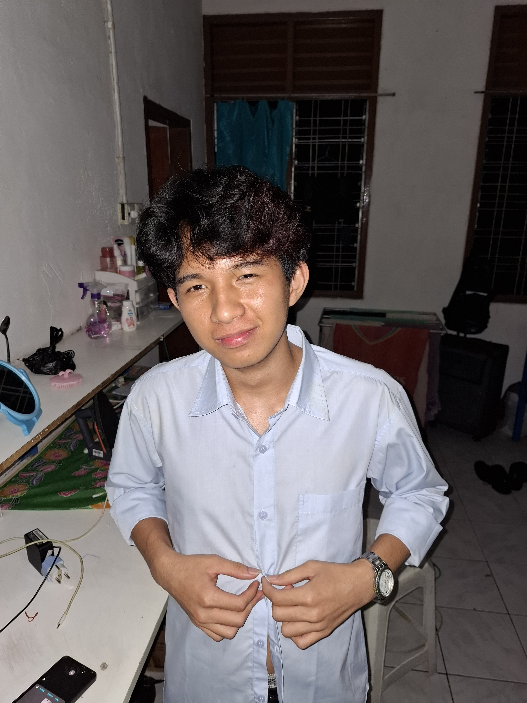

About Me
Hello! I'm Pieter.
My Journey
My experience is more in the field of photography and editing, although simple but can help schools in promotion and also teachers in the implementation of certification.I want to be the best of my school graduates through studying at UNAI
Education
I come from a simple family filled with love. I graduated from junior and senior high school from the Nias Adventist College, and I moved from elementary school because I followed my parents' ministry.
Skills
- playing piano 1
Hobbies and Interests
- Hobby 1
- making and remaking music
- playing games
- editing